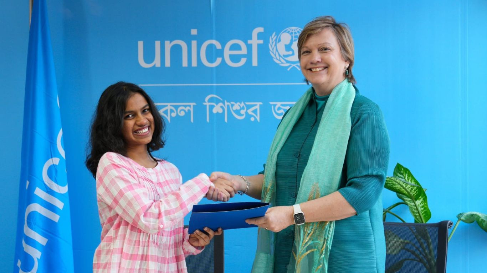

International
US labour delegation arrives in Dhaka

Published: November 22,2024
A delegation from the United States government arrived in Dhaka on Friday morning for a four-day visit aimed at enhancing economic resilience, stability, growth, and the creation of meaningful, high-quality jobs in Bangladesh.
The team has held discussions with the workers' organisation Solidarity Center about the working environment of labourers, among other issues. The delegation was led by Kelly M Fay Rodríguez, special representative for International Labour Affairs from the US Department of State, and Thea Lee, deputy undersecretary from the Department of Labour. China ambassador to Bangladesh Yao Wen emphasized that regardless of changes in domestic or regional circumstances, the China-Bangladesh relationship has remained steadfast, progressing steadily in the right direction. This stable partnership has become a pillar of regional peace and prosperity, he added. The envoy highlighted that cultural exchange is a vital bridge connecting the hearts of the two peoples, with China-Bangladesh friendship deeply rooted in the community and benefiting both nations.UNICEF appoints 16-year-old Gargee as new youth advocate in Bangladesh
Published: November 22,2024